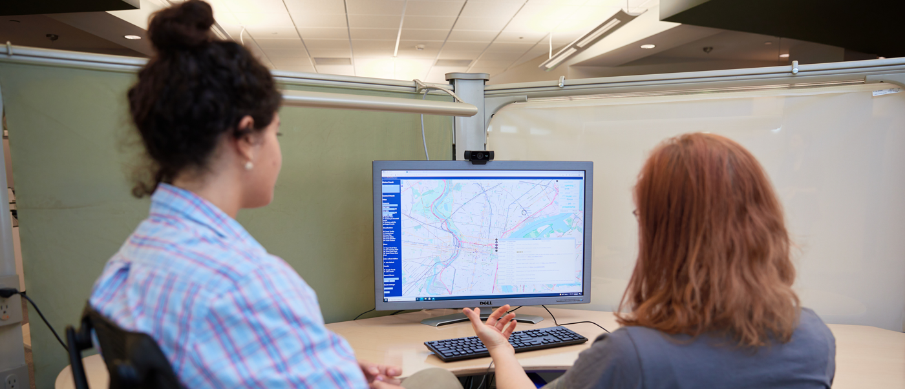

I am a Research Scientist at the Data Institute for Societal Challenges (DISC) at the University of Oklahoma. DISC is dedicated to creating innovations in data science, artificial intelligence, machine learning, and data-enabled research.
DISC develops and grows convergent research teams dedicated to solving local to global-scale challenges. This is achieved through the implementation of foundational data science and data-enabled research related to aerospace, defense, and global security; community and societal transformation; the future of health; and environment, energy, and sustainability. DISC is leading advances in the following strategic focus areas:
Data Science Applications: Developing analytics that combine computer science, AI/ML, cognitive psychology, decision science, and human-computer teaming to create robust, explainable, fair, efficient, and reliable data-enabled solutions that can be transitioned to real-world use.

Human-Guided AI and ML: Leveraging innovative AI/ML to advance science and engineering and to build impactful, trustworthy solutions.
Human-Computer Teaming: Integrating the strengths of humans and intelligent systems to address complex problems and decisions.
Predictive Analytics: Creating tools and systems capable of extracting, assimilating, and analyzing data for accurate, timely, and reliable predictions (with quantified uncertainty) to transform domains such as health and energy.
Decision Environments & Visual Analytics: Building interactive, explainable, and human-centered interfaces that help experts explore data and make confident, informed decisions.
Scalable Software & Hardware: Enabling real-time and trustworthy AI/ML with modern computing stacks and scalable data pipelines.
My work spans two applied verticals—Healthcare AI and Energy & Subsurface Analytics—with a common emphasis on explainable machine learning, medical and scientific imaging, predictive modeling, and human-centered visual analytics. I collaborate with clinicians, public health teams, and geoscientists to translate algorithmic innovation into deployable, real-world systems.
Image-based Estimation of Rock Mechanical Properties (JGSE, 2025): Deep learning and texture/shape proxies from SEM images to predict Young’s modulus and related properties, reducing lab cost and turnaround time.
Self-Supervised ViT Segmentation for Shale Microstructure (SPE Europec @ EAGE, 2025): Vision Transformer–based self-supervised segmentation of FIB-SEM images into 12 sub-classes, grouped into organic, inorganic, and pore classes for large-scale analysis.
Fundus/Retinal Imaging Pipelines (SPIE Medical Imaging): Two-stage pipelines for robust dataset curation and classification; transfer learning approaches for improved detection and screening performance.
Clinical Risk & Workflow Analytics: Predictive modeling and explainable visual analytics dashboards that integrate into decision workflows for public health and clinical partners.
See What’s New for recent abstracts and links, and Publications for the full list.